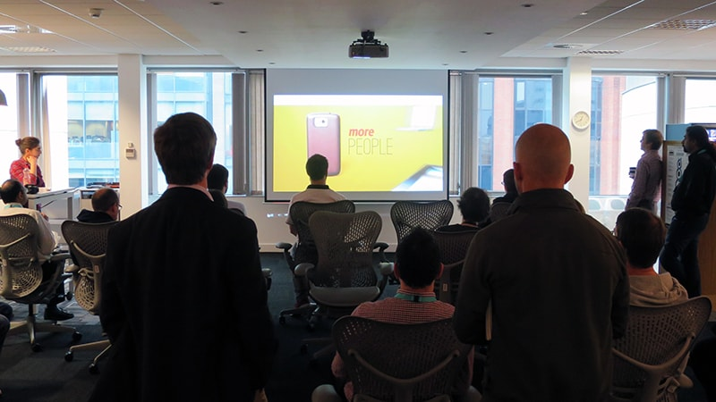
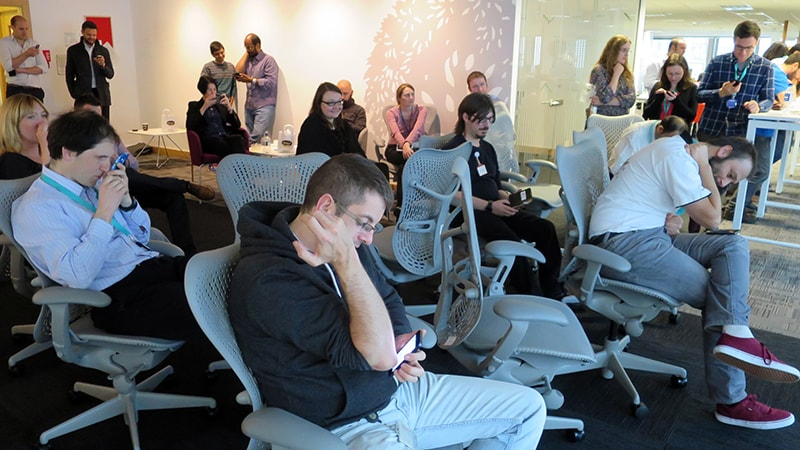
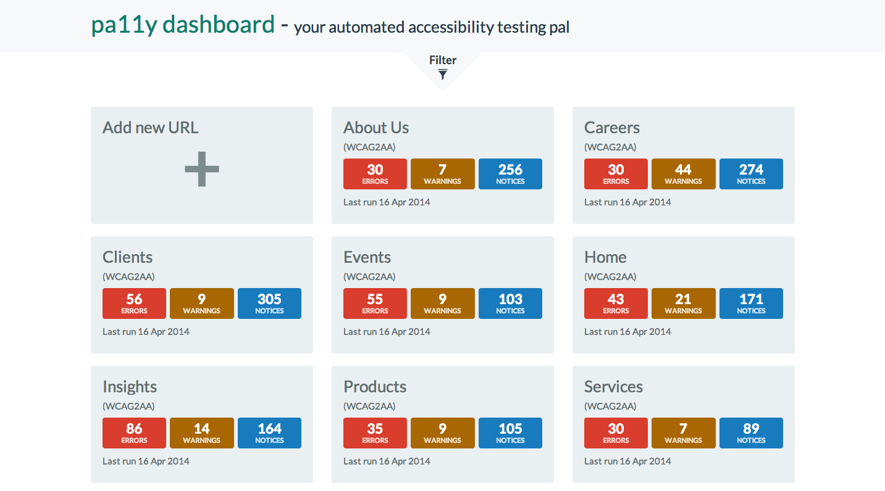
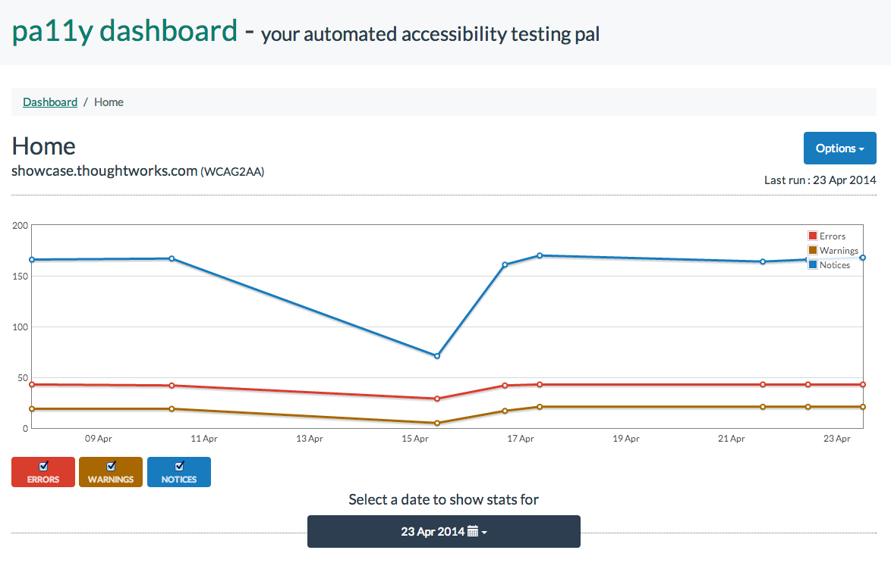

For two and a half months I worked with ThoughtWorks.com reviewing and researching their accessibility. With stakeholders from Brazil to India and in between, I helped research, design, build and monitor accessibility.
During the project I conducted user testing, mostly remote with a school for the blind in Pune called TechVision. Setting up interviews and meetings over Skype and Hangouts we discussed accessibility requirements for a website.
ThoughtWorks prides itself on its diversity, with 30 offices in over 13 countries. I was able to use the diversity of colleagues by asking for opinions around the office, setting up remote testing in countries like India and finally showcasing to our clients in Brazil.
Throughout my project the majority of the beginning involved a lot of desk research. I discovered how to use a screen-reader, which screen-readers were popular among the community like JAWS and their shortcuts. Blog posts came in handy for me, specically this blog called Things I learned by pretending to be blind for a week, specifically aimed for those able to see and delving into accessibility.
A strong belief at ThoughtWorks is by making yourself invaluable, you make yourself valuable. Sharing knowledge is vital for any team, especially in an agile environment. Through lunch and learns in the office, not only did I raise awareness of what I was doing, but I was able to take advantage of the office diversity. I gathered opinions from colleagues all over the world. Leading on from this I was invited to a client site where accessibility was a legal requirement, to present my research. My slides were then requested by the client to use in a future accessibility event.
 The first challenge I quickly faced with regards to my team's approach to accessibility was that it was going to be a one time consideration. As a developer I was able to pair with my team members to make sure that we had the tools and they were on our build monitors to ensure we were monitoring progress. I was able to setup Pa11y, an automated accessibility testing tool, which provisioned itself and continously monitored our pages. Pa11y is also a great tool for visualising the number of errors and warnings of accessibility issues and can be checked against all levels of WCAG 2.0 regulations and Section 508.
 Unfortunately at the end of my two month project I feel I had taken too long on research and still failed to ensure in every story that accessibility was a core focus. Unfortunately in the last feedback session with TechVision the website only received a score 2/5 for its accessibility.
If I was to do this project again, I would have taken a complete step back from development and made sure I focused on the user experience. Unfortunately ThoughtWorks do not hire graduates for user experience and I had to balance both my passion for UX and demonstrating my skill and worth as a developer.
In addition to learning about accessibility, I learnt how to add value to a project on day one. Consulting was completely new to me, and the fast pace whilst still doing my degree, felt completely natural.
Another success for me, was after the project I was invited to work further with TechVision during my training in India. Here I continued my research and was shown how a braille printer works, how the school affects blind people's lives and was given a demonstration of how a blind person uses their computer.
For my personal career growth, this has lead me to speaking at conferences and talks about accessibility. I also write blog poss covering my research so far and I'm now conducting more research into different cultures and accessibility.
The last and biggest success of the project was being hired as a graduate consultant by ThoughtWorks!